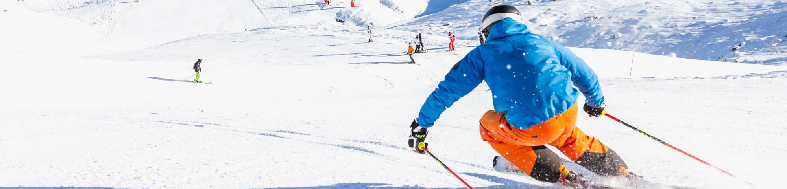
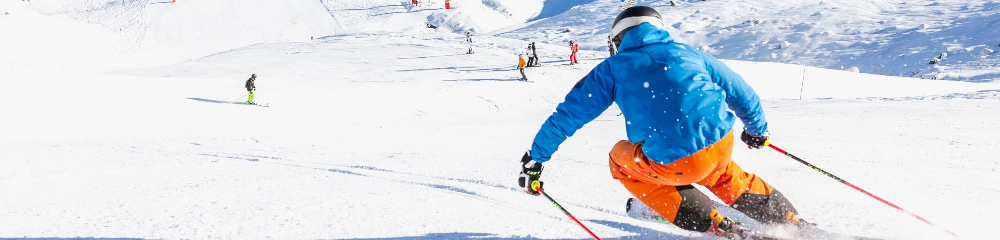

À propos :
Qui est le public cible?
Chez Ski Drop, nous voulons le meilleur pour les meilleurs, soient nos clients
Les clients qui visitent notre site Web sont des skieurs, des snowboardeurs, des tubistes, bref tout ceux qui désirent descendre les multiples montagnes de la région d'une façon ou d'une autre.
De tous âges, nos clients désirent avoir le meilleur équipement pour descendre les pistes et c'est ce que nous visons à faire chez Ski Drop. Pour ce faire, voici les trois points que nous pensons que les clients cherchent le plus sur un site Web comme le nôtre :
- De l'équipements diversifiés et de qualité supérieure
- Des prix qui compétitionnent avec celui du marché
- Du service exceptionnel
Nous pensons être en mesure de combler les clients sur tous ces points grâce à notre système "Best Drop" qui fait une analyse des prix du marché et qui génère des prix plus bas que ceux du marché. Nous avons également un système en place au niveau de nos employés au service à la clientèle qui nous permet d'assurer une réponse à chaque questions maximum 30 minutes après qu'on la reçoive.
Notre site Web a été conçu avec soin par des designers qui écoutent les clients. Les clients ont demandé un site Web simple, nous avons donc conçu un site Web où le client peut se rendre facilement où il veut en moins de trois clics. Les clients ont également demandé un site Web attrayant, un site Web qui donne envie d'acheter, nous avons donc suivi un design avec des couleurs et des images qui rappellent ce sentiment que nous avons en entrant dans une boutique de ski proche des montagnes enneigées. Finalement, les clients demandaient un site Web accessible avec les appareils mobiles, ce que nous avons également fait. La version mobile du site Web est très proche de la version Web, mais nous avons simplifié certains aspects pour permettre un usage simple avec une seule main.
Nous avons trouvé trois sites Web de compétiteurs dans le domaine de la vente de ski et autres en ligne. Nous voulons montrer ce que nos compétiteurs sont capables de faire pour montrer ce que nous sommes capables de faire nous aussi.
- https://www.skishoprivesud.com/
- Tout est en une page, donc une fois que la page est chargée, il n'y a pas d'autres chargements à faire.
- Le choix des couleurs rappelle le sport d'hiver, venant ainsi bien accompagné les photos.
- Tout est en une page, mais les liens vers les diverses parties de la page sont en haut complètement dans l'en-tête, donc il est facile de se perdre et de devoir remonter tout en haut de la page pour trouver la section qu'on veut. Une solution aurait été de faire suivre l'en-tête lorsqu'on descend dans la page.
- Le site Web indique qu'on peut louer et acheter des articles, mais on a seulement le tarif des locations, donc on ne peut pas savoir les prix qu'on peut s'attendre pour les achats sans les contacter.
- https://www.skitown.ca/fr
- La navigation sur ce site Web est simple et tout est accessible avec peu de clics. La barre de navigation suit lorsqu'on descent sur une page, ce qui permet d'aller où on veut sans devoir toujours remonter tout en haut de la page.
- Les produits sont simples à trouver, autant par la barre de recherche que par l'affichage qui s'ajuste mieux selon nous que plusieurs autres sites Web. Fini l'affichage en ordre alphabétique, ici on peut afficher les produits par les meilleurs vendeurs.
- Le design n'est pas attrayant avec le choix de couleurs trop simple (noir et blanc) et les multiples erreurs, surtout le manque de majuscule.
- Certaines pages auraient pu être éliminées ou fusionnées avec d'autres pages. Soient ces pages sont remplies sans être pertinentes ou sinon elles sont pratiquement vides, on pourrait retravailler les pages pour rendre le site plus intéressant.
- https://www.oberson.com/fr/
- Le design de la page est magnifique. Ce site Web montre comment on peut utiliser le noir, le blanc ainsi que des teintes de gris et faire un beau site Web.
- Le bas de page de ce site Web est parfait. Il incorpore les informations importantes qu'un client pourrait avoir de besoin à plusieurs moments de sa visite tout en ayant les informations qu'un client qui veut passer en magasin aurait de besoin en un coup d'oeil.
- Le site Web a un défaut qui ressemble beaucoup à ce qu'on retrouve dans les boutiques, soit l'intrusivité. Dès qu'on arrive sur la page, on a le droit à une pop-up mettant en évidence le spécial du moment. De plus, tout au long de la visite, on a un icône de clavardage qui crée une pop-up à chaque changement de page, ce qui est très intrusif.
- La seconde faiblesse du site Web est qu'il y a trop de liens. Nous n'avons pas besoin de cliquer plusieurs fois pour se rendre où on veut, mais on peut facilement se perdre devnat tous ces liens qui nous sont présentés.
Forces :
Faiblesses :
Un excellent site Web surtout sur le design, l'accès facile à leur réseaux sociaux, donc facile de les contacter. Le site Web a été clairement conçu avec la facilité d'utilisation pour les clients.
Forces :
Faiblesses :
Le site Web n'est pas très attrayant à l'oeil, mais sa simplicité dans la navigation et dans la recherche des produits le rend facile d'utilisation, un site qui va droit au but sans élégance.
Forces :
Faiblesses :
Ce site Web est très beau, très pratique, mais il est également trop chargé avec tous les liens et l'intrusion du clavardage. Le site est parfait pour quelqu'un qui sait ce qu'il cherche.